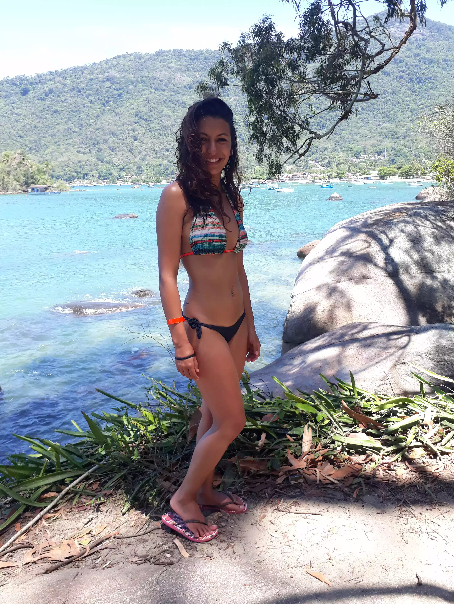
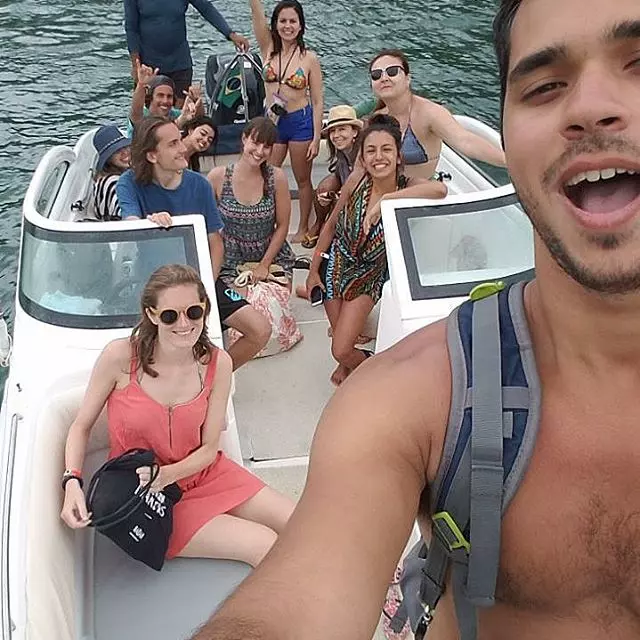

Por Deborah Oliva
El siguiente texto es muy particular ya que narra los días de Deborah Oliva en Ilha Grande, que a su vez, fueron los mismos que viví yo (Gonza). Esta es su visión, la mía la pueden encontrar haciendo click AQUÍ. El texto original esta en portugués, pero al final van encontrar una traducción al español. ¡Qué lo disfruten!.
Por Deborah Oliva
"Meu nome é Deborah, tenho 22 anos e sou formada em Educação Física. Atualmente trabalho como professora de natação, e não por pura coincidência, eu sempre amei a água! É uma das coisas que mais me encantam no mundo, algo que me acalma e me traz uma paz inexplicável, e por esse motivo, todas minhas viagens, foram para nada mais, nada menos para praias, claro"
O ano de 2017 para mim, foi de muitas mudanças e conquistas, mas também de muito estresse, trabalho, estudos, juntamente com uma vontade imensa de viver, porque afinal, existe coisa melhor do que viver, e se sentir realmente vivo? Bom, para mim, não! Foi ai então que decidi que NECESSITAVA, me conhecer, desestressar, e sair um pouco da minha realidade. Mas não queria alguém comigo, para me falar o que posso, tenho ou deveria fazer, pelo contrario, queria testar minha independência, queria viajar sozinha!
Como era minha primeira experiência sozinha, pesquisei muito, lugares, preços, tipos de hospedagem, tudo. Foi então que um amigo da minha Universidade falou comigo sobre Ilha grande, e o modo que ele falava desse lugar, de como era lindo, ao mesmo tempo tão simples, e ótimo para conhecer pessoas, para mim não poderia ser mais perfeito! Estava decidido, esse era o lugar! E que comecem as buscas por lugares para ficar, festas para ir, como chegar e quanto isso iria me custar, e que prazer isso me dá!
Finalmente chegou o dia de ir, e claro, meus pais não entendiam muito o porque dessa minha decisão de viajar sozinha. Afinal, uma mulher viajar sozinha? É tudo tão perigoso para nós! Mas eu ia, de qualquer jeito, e fui!
A trilha para Praia Preta, Ilha Grande, Brasil.
Do lugar onde eu moro (Cotia, São Paulo), fui até o terminal Tietê, para pegar o ônibus, no qual já havia comprado a passagem pela internet (100 reias ida, e 100 reias volta), a viagem durou por volta de 9 horas, e cheguei à Angra dos Reis por volta das 16 horas e 30 minutos, tive que pagar um barco para fazer a travessia, já que as balsas só funcionavam até as 16 horas (Durante a semana, tem balsa das 13, as 16 horas, de meia em meia hora). Estava tão ansiosa, e feliz, vendo aquele mar, aquele por do sol lindo, até que finalmente chegamos! Fiquei cerca de 5 minutos, só olhando aquela cidade, pequena, e tão linda, cheia de luzes e charme, para depois ir ao Hostel Biergarden, no qual me receberam muitíssimo bem.
Chegando la, tive uma boa e má surpresa! A grande maioria das pessoas eram de outros países! Meu Deus, eu não falo absolutamente nada de inglês, e meu espanhol? Muito mais ou menos! Mas tudo bem, tranquila, tudo vai dar certo, para tudo se da um jeito.
Nos primeiros dias, já conheci muitas pessoas, dentre elas, chilenas, mexicanos, francesas, argentino (tão lindo!), uruguaios, e de outros muitos lugares! E como isso é maravilhoso! E meu espanhol não é tão ruim, conseguem me entender! Fui passear pela cidade, que é pequena, mas muito bonita, descobri praias próximas, como a praia preta, e uma que fui de barco, a praia dos Mendes, que é uma praia com mar mais agitado e água fria.
Na quinta-feira, fui fazer um passeio, com outras 10 pessoas, que custou cerca de 70 reias por pessoa, de lancha para 3 praias, uma com águas azuis, muito limpas (Lagoa azul), outra com águas verdes, cristalina e com muitos peixes, (Lagoa verde), e como é perfeita a natureza, não? Fiquei de boca aberta com tanta beleza! E a última, somente para nos alimentar.
Passeio em barco em Ilha Grande, Brasil.
Bom... E agora, para os que ficaram com alguma dúvida, e querem saber..
Se descobri alguma festa para dançar? Mas é claro que sim! Fui quarta-feira, quinta e sexta, e dancei muito, até a música acabar.
Se gastei muito, ou foi difícil chegar? Não, gastei cerca de 800 reais no total, entre passagem ida e volta, hospedagem, comida (que fiz no hostel) e passeios. Para chegar é muito fácil, de São Paulo para o Terminal Rodoviário Tietê, de la para Angra dos reis e depois Ilha grande.
Se isso tudo me ajudou a me conhecer, desestressar, e conhecer pessoas? Afinal, esse era meu objetivo! Sim, e muito, posso dizer que foi tudo absolutamente perfeito, e muito melhor do que poderia imaginar.
Se gostei de viajar sozinha? Simplesmente maravilhoso, todos deveriam fazer isso, ao menos uma vez.
Se gostei de ilha grande? Amei! As pessoas são maravilhosas, tanto os turistas como os moradores, tem praias lindas, a cidade é muito charmosa, e tudo vale muito a pena, com certeza!
Se conheci alguém muito especial? Bom, isso fica para as cenas dos próximos capítulos...
El 2017 para mi fue un año de muchos cambios y conquistas, pero también de mucho estrés, trabajo, estudio, en conjunto con unas ganas inmensas de vivir, por qué al final, existe algo mejor que vivir y sentirse vivo? Bueno, para mi, no! Fue entonces que decidí que necesitaba conocerme, desestresarme y salir un poco de mi realidad. No quería alguien conmigo, que me diga que puedo, tengo, o debería hacer, al contrario, quería probar mi independencia, quería viajar sola!
Como era mi primera experiencia sola, busque mucho, lugares, precios, tipos de hospedajes, todo. Fue entonces que un amigo de mi universidad me hablo sobre Ilha Grande y el modo que el me contaba de ese lugar, de lo lindo que era y al mismo tiempo tan simple y óptimo para conocer personas, no podía ser mas perfecto para mi! Estaba decidido, ese era el lugar! Ahí empecé a buscar lugares para hospedarme, fiestas para ir, cómo llegar y cuánto eso me costaría, y que placer me daba todo eso!
Finalmente, llegó el día, y claro, mis padres no entendían mucho porque yo había decidido viajar sola. Una mujer viajando sola? Es todo tan peligroso para nosotras. Pero yo iba a ir de cualquier modo y fui!
Desde el lugar donde vivo (Cotia, San Pablo), fui a la terminal Tietê para tomar el bus que ya había comprado por internet (100 reales de ida y 100 reales de vuelta). El viaje duró 9 hs y llegue a Angra Dos Reis a las 16:30hs. Tuve que pagar un barco para cruzar porque las balsas solo funcionan hasta las 16hs (durante la semana existen balsas de 13hs a 16hs cada media hora). Estaba tan ansiosa y feliz viendo ese mar, viendo aquella puesta del sol tan linda, hasta que finalmente llegamos. Me quede 5 minutos solo observando esa ciudad, pequeña, tan linda, llena de luces y encanto, para después ir al Hostel Biergarden, donde me recibieron muy bien.
Llegando allá, tuve una buena sorpresa! La mayoría de las personas eran de otros países! Mi Dios, yo no hablo absolutamente nada de inglés y mi español? Mas o menos, pero tranquila, todo va dar bien, para todo existe un modo.
Los primeros días ya conocí a muchas personas, entre ellas, chilenas, mexicanos, francesas, argentino (tan lindo!), uruguayos y de otros muchos lugares, y como eso es maravilloso! Y mi español no era tan malo, ellos me entendían! Fui a pasear por la ciudad que es pequeña pero muy bonita, conocí las playas próximas, como la Playa Preta y una que fui en barco, la Playa Lopes Mendes, que es una playa con el mar agitado y aguas frías.
El jueves fui a hacer un paseo con otras 10 personas que costo aproximadamente 70 reales por persona, la lancha paró en 3 playas, una con aguas azules y muy limpias (Laguna Azul), otra con aguas verdes, cristalinas y con muchos peces (Laguna Verde). Cómo es de perfecta la naturaleza, no? Me quede con la boca abierta de tanta belleza. Y la última, solamente para comer.
Bueno, ahora, para los que tienen alguna duda y quieren saber..
Si encontré alguna fiesta para bailar? Claro que sí! Fui el miércoles, jueves y viernes y baile muchísimo, hasta que se termino la música.
Si gasté mucho o fue difícil llegar? No, gasté aproximadamente 800 reales en total, entre pasaje ida y vuelta, hospedaje, comida (que cociné en el hostel) y paseos. Para llegar es muy fácil, de San Pablo para la Terminal Rodoviário Tietê, de allá para Angra dos Reis y después a Ilha Grande.
Todo este viaje me ayudo a conocerme, a desestresarme y conocer personas? Al final ese era mi objetivo! Puedo decir que al final, fue todo absolutamente perfecto y mucho mejor de lo que podía imaginar.
Si gusté de viajar sola? Simplemente fue maravilloso, todos deberían hacer eso, al menos una vez.
Si gusté de Ilha Grande? Ame! Las personas son maravillosas, tanto los turistas como los locales, tienen playas lindas y la ciudad es muy encantadora. Todo vale mucho la pena, con certeza!
Si conocí a alguien muy especial? Bueno, eso queda para los próximos capítulos.